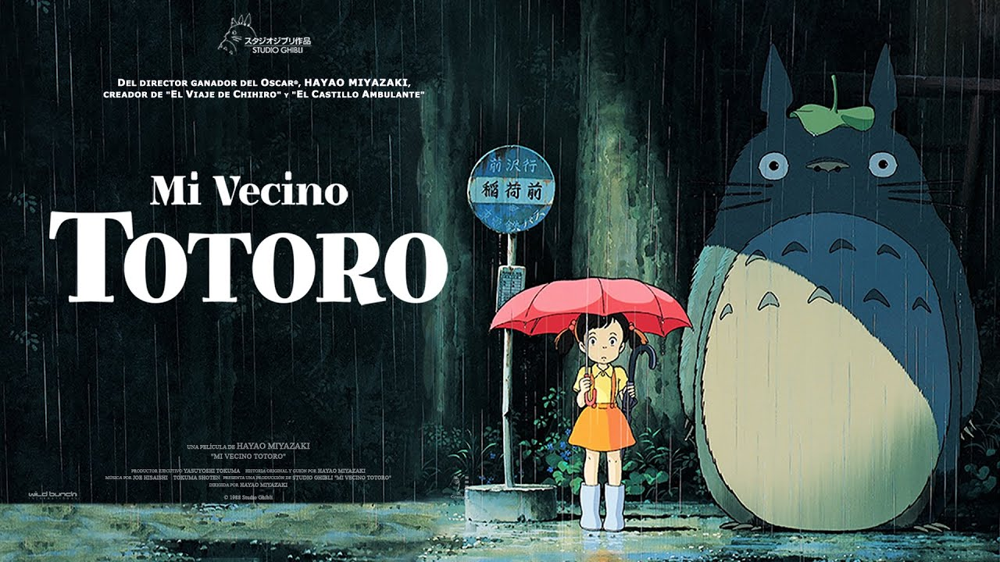
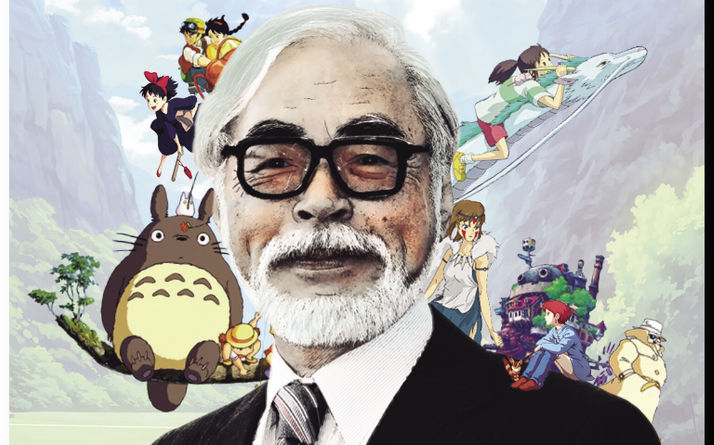

Mi vecino Totoro
Dos niñas, Satsuki de 11 años y su hermana Mei de 4 años, se mudan a una casa con su padre para estar más cerca de su madre hospitalizada. Satsuki y Mei descubren que el bosque cercano está habitado por criaturas mágicas, llamadas Totoros. Pronto se hacen amigos de estos Totoros y tienen varias aventuras mágicas.

Trailer
Elincreible castillo vagabundo
Sophie es una adolescente que trabaja en una tienda de sombreros en un pueblo como muchos, pero su vida da un giro total cuando una bruja la transforma en una anciana.
Trailer
El viaje de Chihiro
Cuenta la aventura Chihiro, una niña que de repente se encuentra sola en un mundo desconocido, mágico, e incluso peligroso. Un mundo habitado por seres mágicos, espíritus y dioses, donde tendrá que encontrar la forma de salvar a sus padres que se han convertido en cerdos.
Trailer
